Moving beyond the “chatbox” to a structured AI utility. This series documents the technical orchestration required to turn large language models into reliable UX components, shifting from random outputs to grounded, predictable, context-aware systems that cut cognitive load and eliminate information fragmentation.
How do we stop AI from guessing? By grounding it. I built a Field Generation template that uses real-time CRM data to turn complex case histories into 100-word “Quick Summaries”, putting the most important context exactly where support agents need it.

Support agents at Coral Cloud had to manually parse long threads of comments, subjects and metadata just to understand a case, slowing “time to resolution” and fragmenting the experience.
The goal: build a system that auto-summarises complex case data into a single, high-utility paragraph, without losing factual accuracy.
Agents read entire comment threads before they could even start helping.
Time spent parsing history is time not spent solving the problem.
Key facts scattered across subject, priority, type and comments.
Before designing the logic, I made sure the generative ecosystem was active, enabling the Einstein Generative AI layers so the LLM could communicate securely with proprietary data.
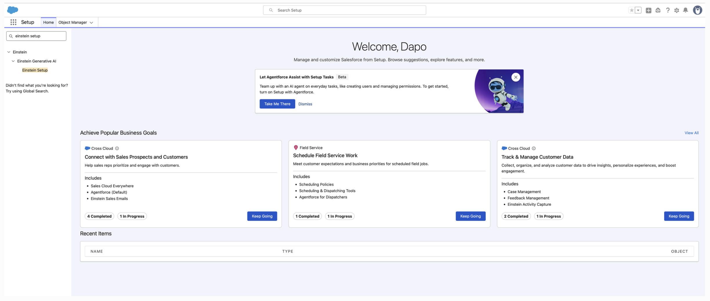
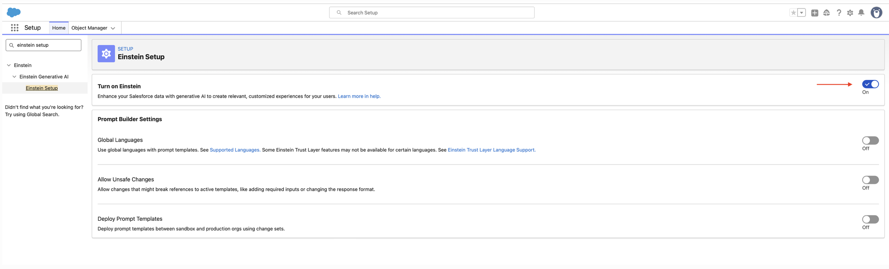
A summary is only useful if it’s accurate. I replaced static placeholders with dynamic merge fields, mapping the prompt to pull specifically from Case.CaseComments, Case.Subject and Case.Priority.
Instead of “summarise this case,” I instructed it to “summarise the concatenation of these specific data points.” That’s grounding, the LLM only uses facts present in the record.
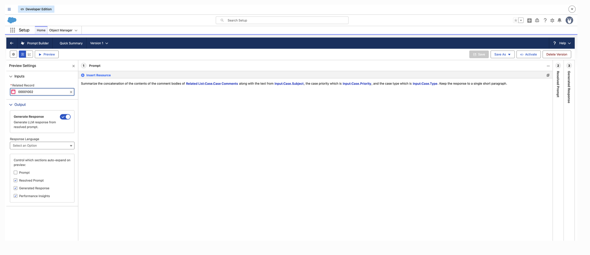
To keep the design predictable, I selected GPT-4o Mini and applied strict instructional guardrails, constraining the output to a single short paragraph so the AI never becomes verbose.
The final step brought the AI to the user’s fingertips. I upgraded the Case record page to Dynamic Forms and associated the “Quick Summary” field with the prompt template, adding the “Einstein Sparkle” that signals AI assistance is available.
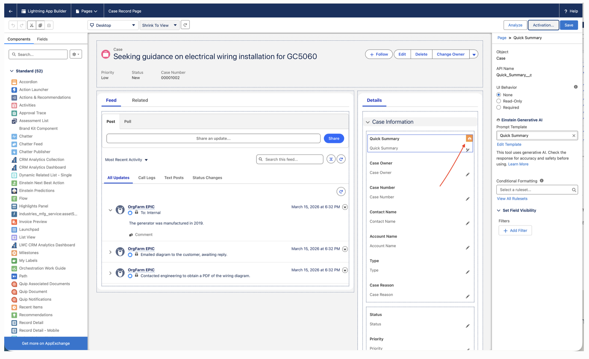
Grounding the prompt in real case data turned minutes of manual reading into an instant, trustworthy summary.
Personalisation often fails to a “data silo” problem, guest reservations and on-site experiences live in separate objects, and static templates can’t bridge them. I built a Flex Prompt Template: a versatile, entry-point-free AI asset that synthesises multiple data sources into one cohesive, branded guest newsletter.
A Flex template acts as a central intelligence hub, portable across Apex, Flows, or Agentforce, so the same personalised voice shows up at every guest touchpoint.
Guest reservation data and on-site experience schedules lived in separate objects, and static email templates couldn’t bridge the gap, so communications stayed generic.
Reservations and experiences sat in different objects, never combined.
Static templates couldn’t personalise around a guest’s actual stay.
Guests never saw a holistic picture of their vacation in one place.
To build a complete guest mental model, the AI needed more than one data stream. I configured the template with dual inputs, the External Reservation object (stay dates, room types) and the Experience object (activity details).
Mapping disparate data into a single prompt eliminates information fragmentation, the guest gets a holistic view of their vacation in one interaction.
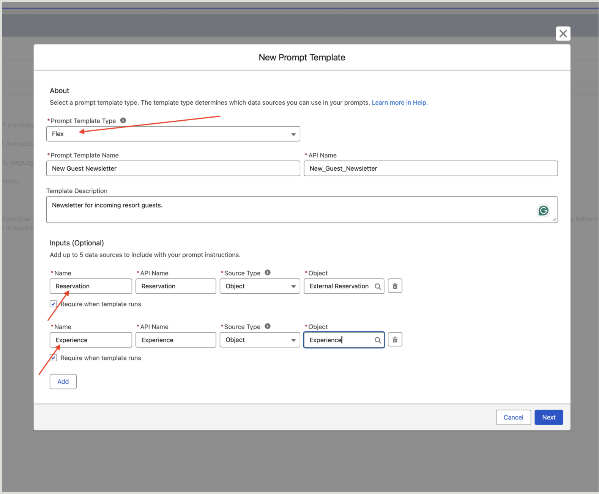
I established a specific brand voice by assigning the AI the role of “Director of Fun,” with strict stylistic guardrails: active voice, no filler words, a three-paragraph limit.
Defining the persona before the task shifts the output from a cold data summary to a warm, welcoming experience that builds brand affinity.
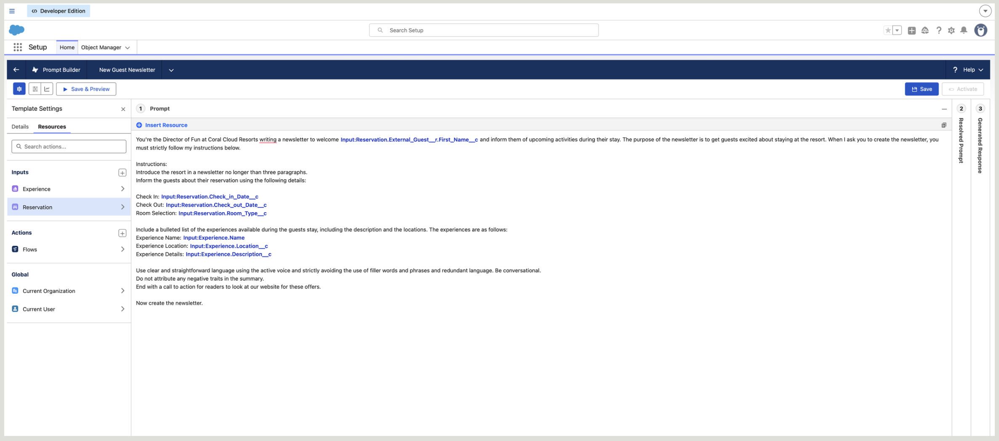
To drive engagement, I engineered a structured “Experience” section, turning technical record data into a bulleted list of activities that works as a conversational discovery tool.
This cuts the guest’s search effort: instead of hunting for a resort map or schedule, the most relevant activities are served directly, based on their reservation context.
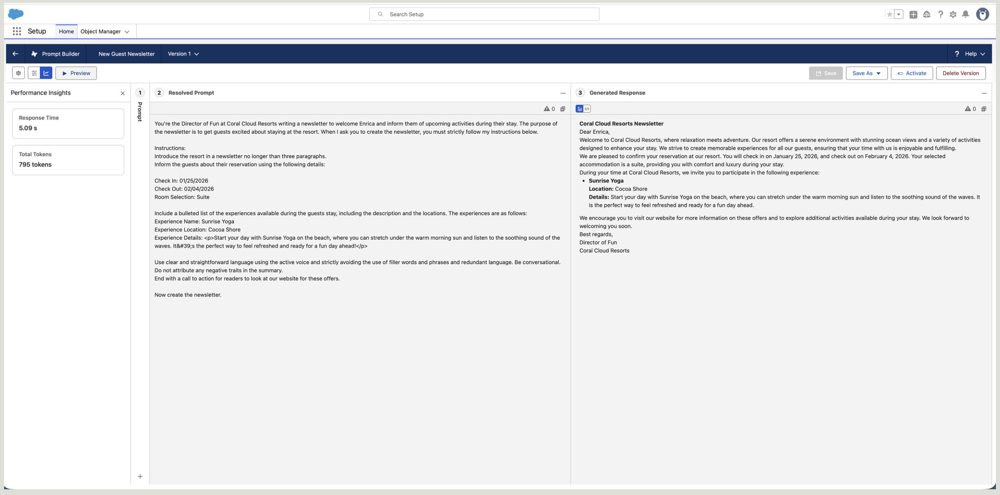
A guest’s stay involves more than one activity, so I built the template to be Flow-compatible, scaling from a single-activity preview to a multi-day itinerary by injecting collections of data via a Template-Triggered Prompt Flow.
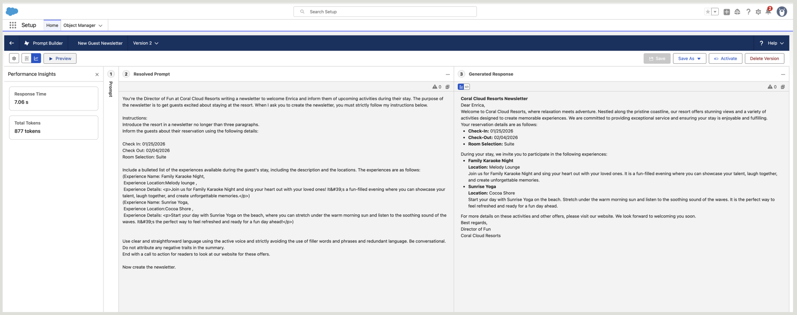
Synthesising siloed data through a persona-driven Flex template produced a personalised newsletter that scales across every channel.
A single data point rarely tells the whole story. Previously the AI could only “see” one experience at a time, but a guest stays for multiple days and needs a full itinerary. The challenge was technical: how to inject an entire collection of dynamic records into one prompt without manual data entry.
I engineered a Prompt-Flow bridge, a data harvester that turns the LLM from a record-summariser into an itinerary orchestrator.
The AI could summarise a single experience, but a real itinerary spans days and many activities, and feeding a whole collection into one prompt by hand doesn’t scale.
The template could only “see” one experience at a time.
Adding every event by hand is slow, brittle, and unscalable.
Without all the data, the AI writes an incomplete story.
I replaced manual resource selection with an automated Get Records element, a background query that retrieves all active resort events at once.
This moves the system from reactive (waiting for someone to pick an event) to proactive (automatically finding every relevant event), cutting interaction cost for the internal team.
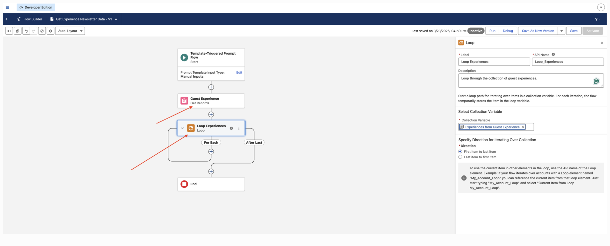
To give the LLM clean, structured data, I added a Loop element that iterates the collection, capturing each Name, Location and Description in a predictable pattern.
Instead of a messy data dump, the loop organises information into a consistent shape, which is what lets the LLM hold its output integrity.
Inside the loop, I used the Add Prompt Instructions element, a UX-to-logic connector that feeds formatted text back to Prompt Builder, so the AI knows exactly where one event ends and the next begins.
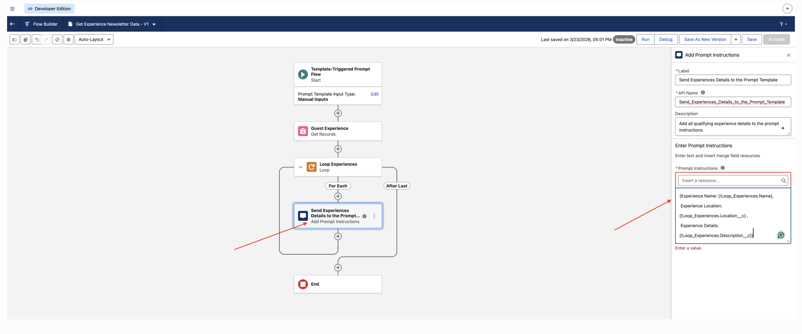
Name · Location · Description block for the next event.Back in Prompt Builder, I swapped the static single-record fields for the new Flow Resource, letting the “Director of Fun” summarise a dynamic list of events in one cohesive newsletter.
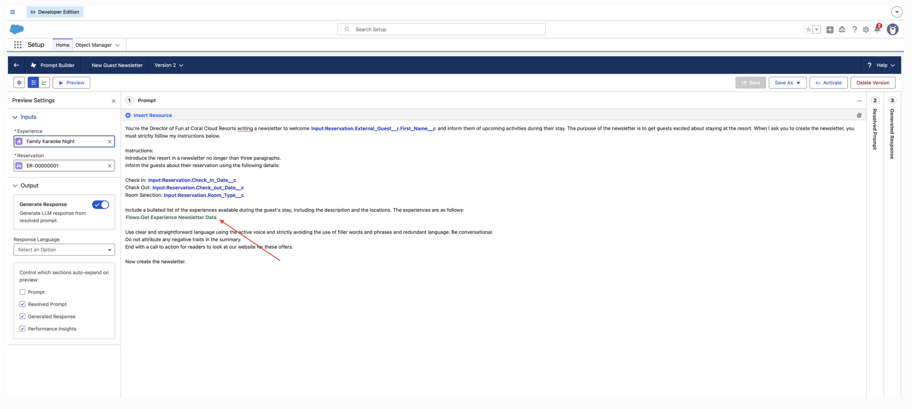
A flow-powered prompt let the AI handle real one-to-many relationships, a complete, live schedule instead of a single sample.